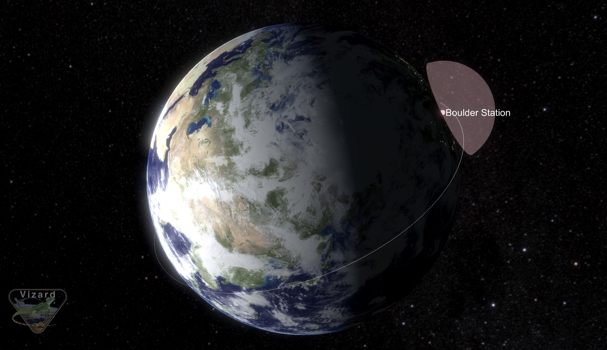
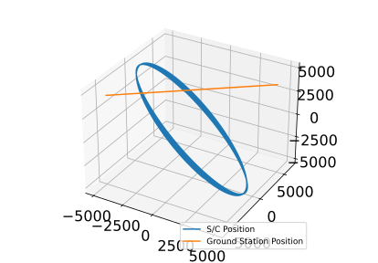
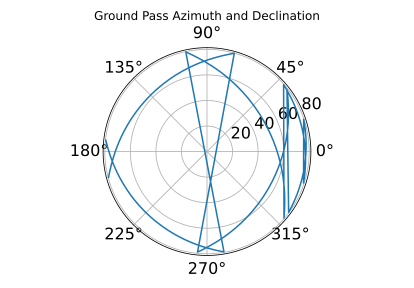
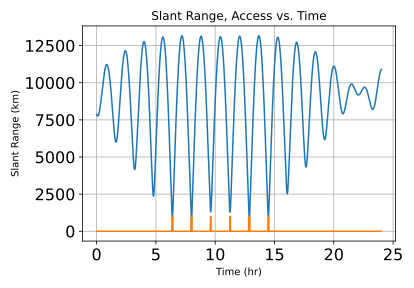
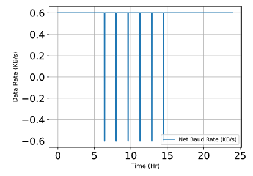
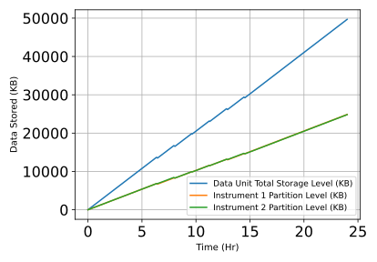

scenarioGroundDownlink¶
Overview¶
This scenario demonstrates how the on-board power system can be used to simulate data down-link that is dependent on access to specific geographic locations (i.e., ground stations).
This scenario is intended to provide both an overview and a concrete demonstration of the features and interface of Module: groundLocation, which represents a specific ground location and computes visibility from that location to spacecraft, and Module: spaceToGroundTransmitter, which represents a spacecraft-based radio system that requires visibility to a ground station.
The script is found in the folder basilisk/examples and executed by using:
python3 scenarioGroundDownlink.py
The scenario is meant to be representative of a small satellite with constant data collection attempting to downlink data to a ground station located in Boulder, Colorado.
When the simulation completes, the following plots are shown to demonstrate the data stored, generated, and downlinked.
